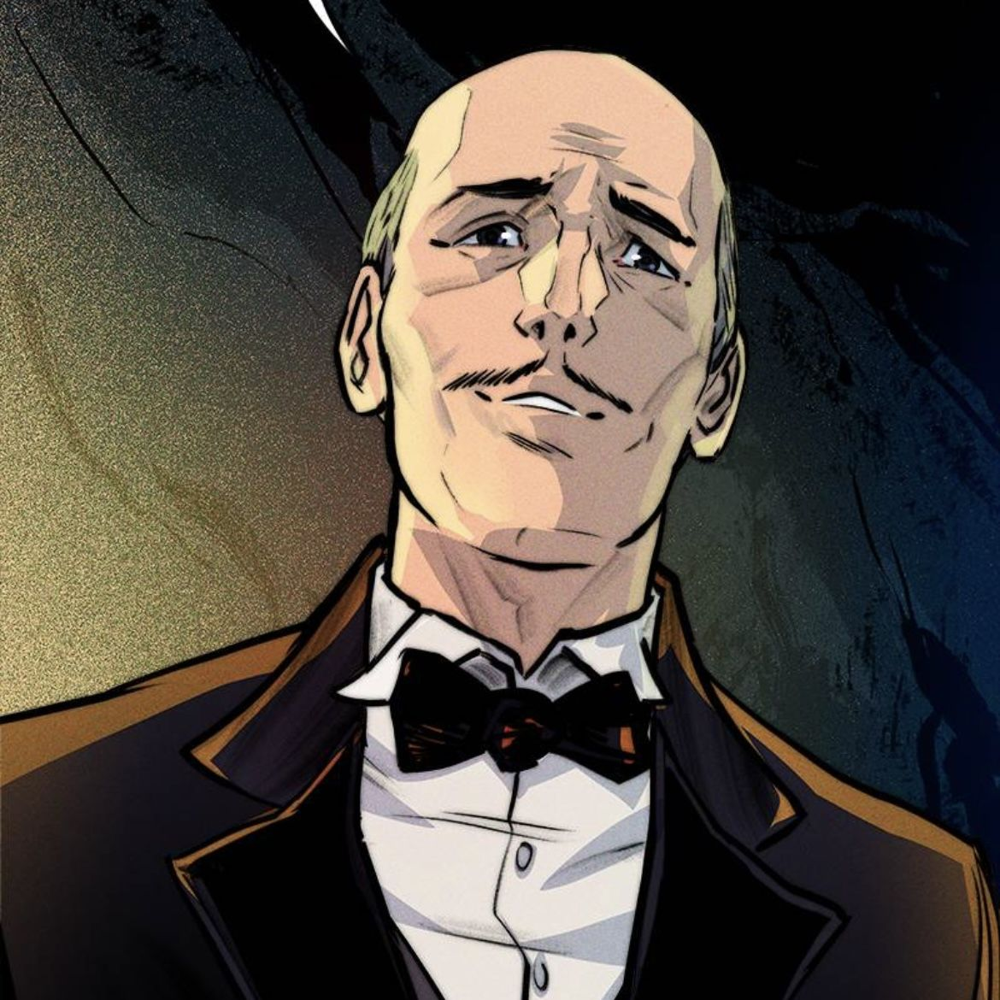
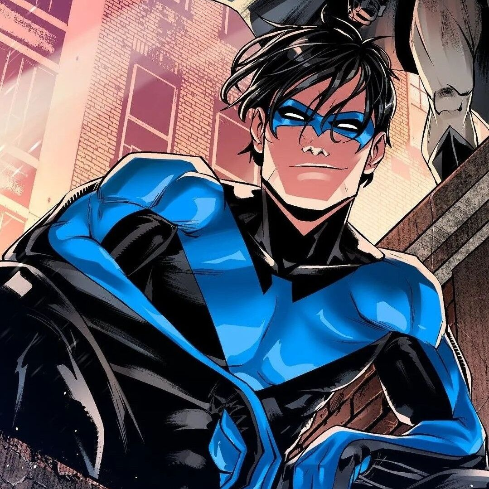
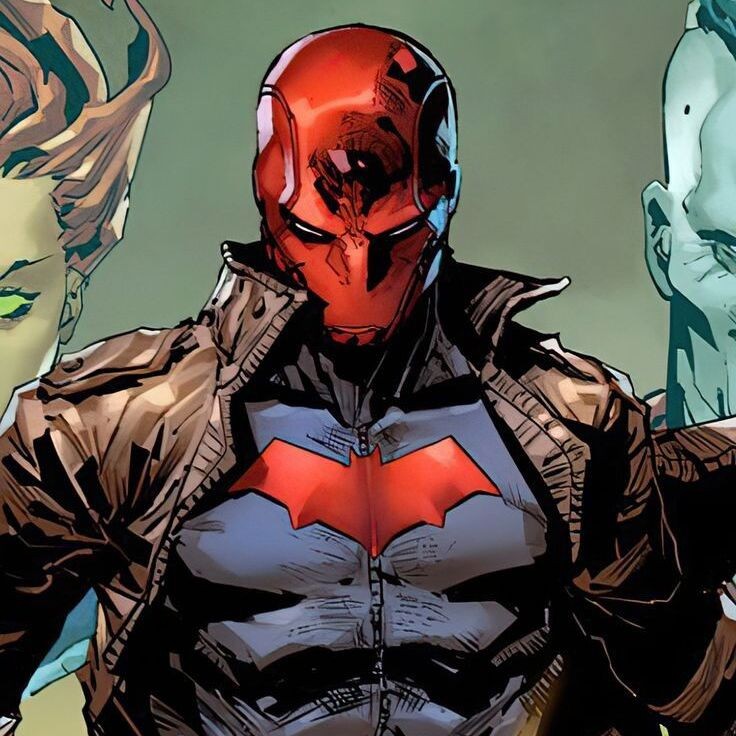
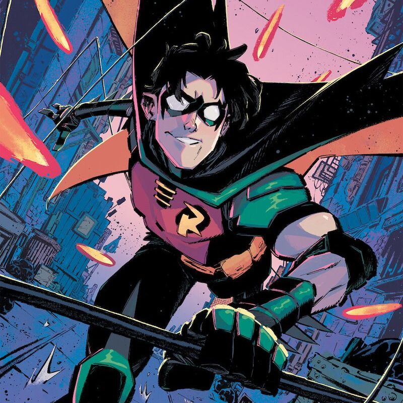
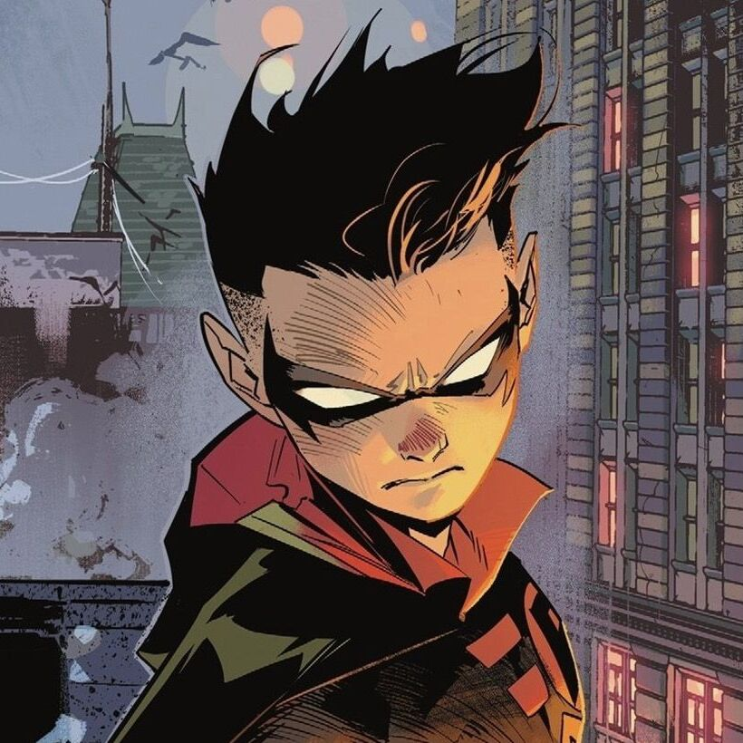
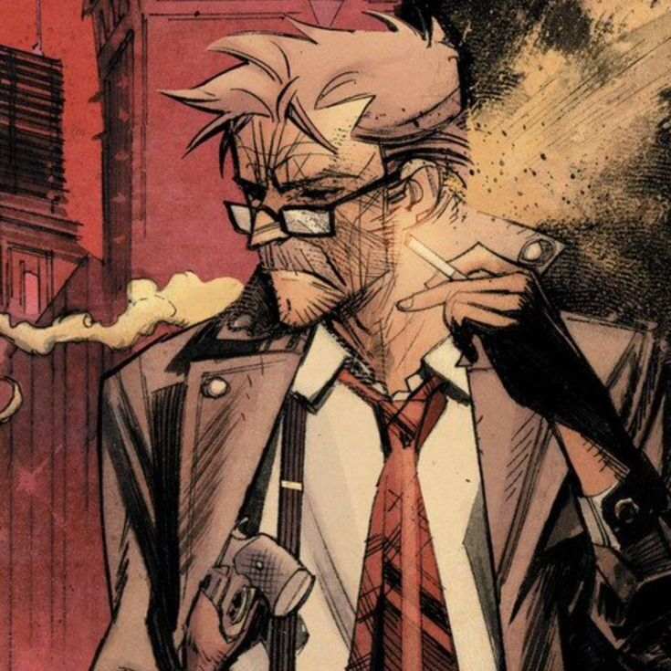
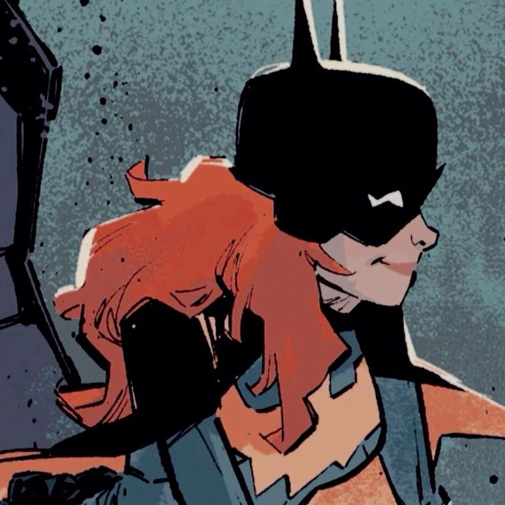
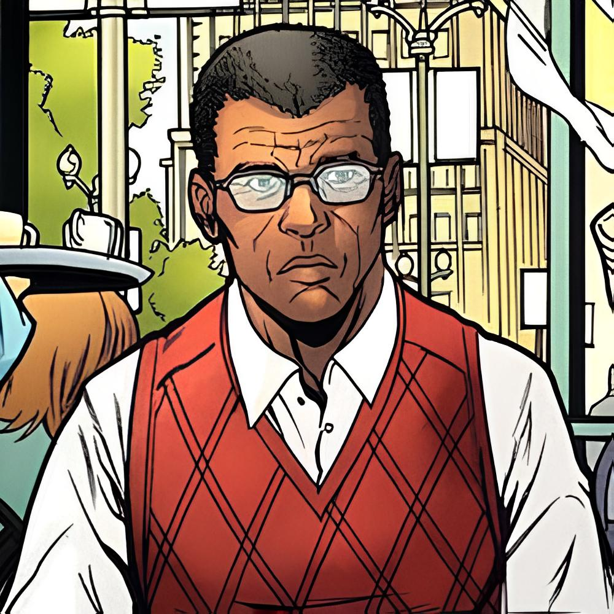

Alfred
O mordomo e conselheiro fiel de Bruce Wayne, quase um pai para ele.

Dick Grayson
Primeiro Robin, também conhecido como Asa Noturna, aliado experiente do Batman.

Jason Todd
Segundo Robin, ressurgiu como Capuz Vermelho, mas ainda possui conexão com Batman.

Tim Drake
O terceiro Robin, conhecido por sua inteligência e habilidade de investigação.

Damian Wayne
Filho biológico de Bruce Wayne e Talia al Ghul, futuro Robin e aliado do Batman.

Comissário Gordon
Chefe da polícia de Gotham e um dos maiores aliados do Batman.

Batgirl
Barbara Gordon, filha do Comissário Gordon, lutando contra o crime como Batgirl.

Lucius Fox
Responsável pela tecnologia e equipamentos de Bruce Wayne, grande aliado estratégico.
Kate Kane
Prima de Bruce Wayne e vigilante de Gotham, luta contra o crime como a Batwoman.